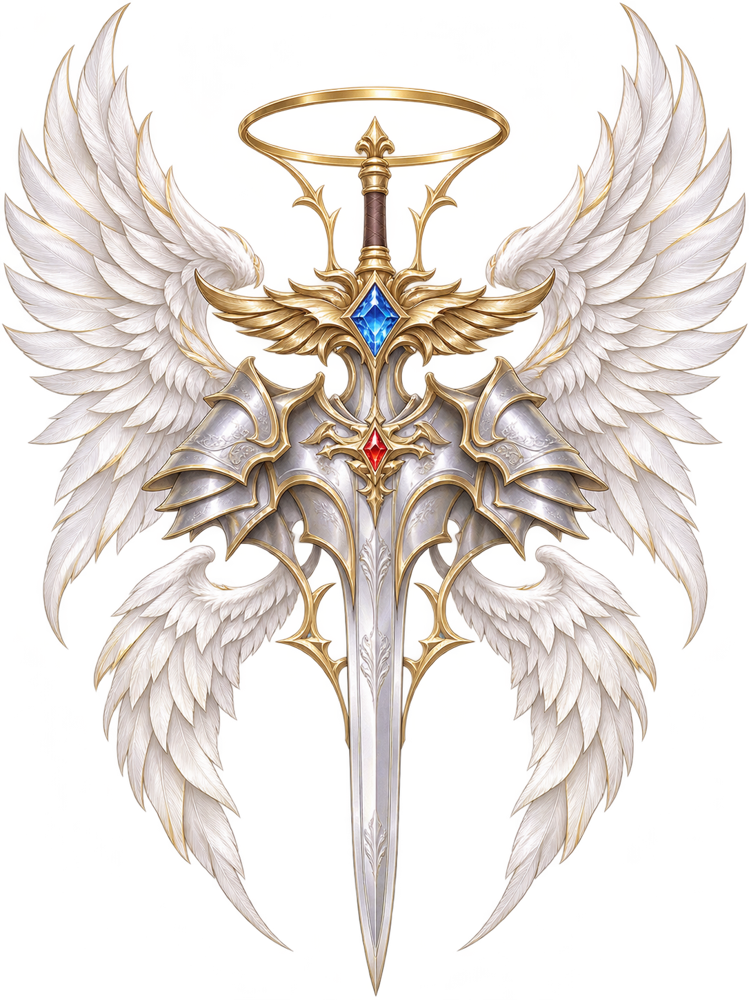
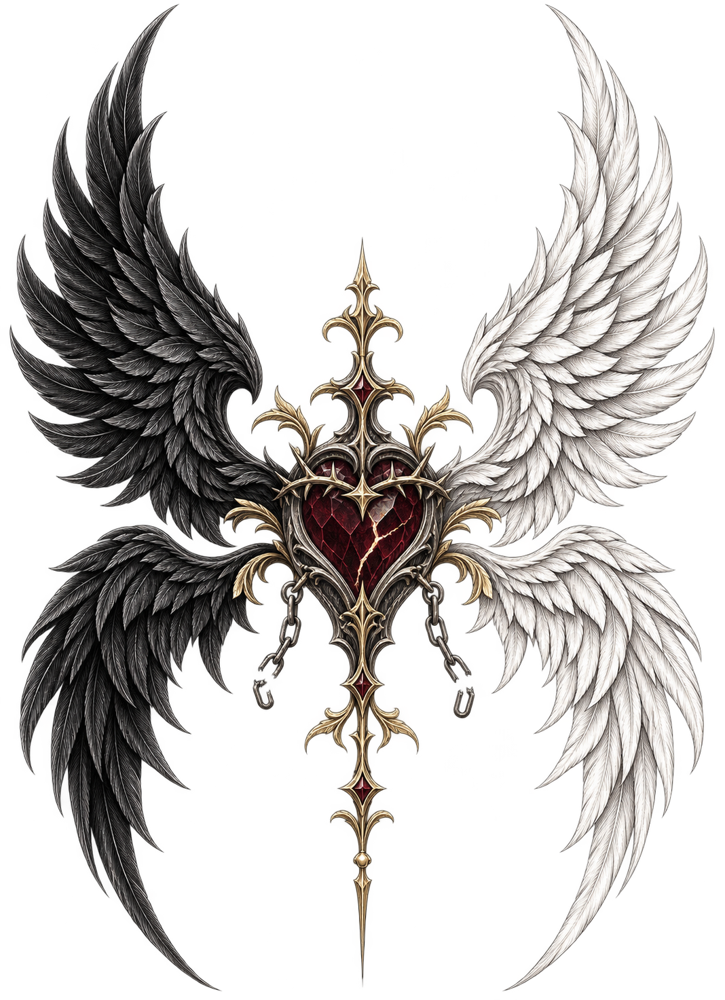

태초에 창조주는 세계를 빚고 네 명의 대천사에게 질서를 맡겼다. 그러나 어느 날, 창조주는 아무런 설명 없이 사라졌다.
창조주가 남긴 천명의 서에는 모든 생명의 운명이 기록되어 있다. 엔젤 페더스는 그것이 세계를 지탱하는 법칙이라 믿었지만, 한 천사는 생명에게 내려진 속박이라고 주장했다.
그 천사의 이름은 루시퍼. 운명을 선택할 권리를 외친 그는 동료들과 함께 추락했고, 그 전쟁은 인간의 땅으로까지 번졌다.


질서의 날개와 자유의 날개
ENTER THE WORLD ARCHIVE
창조주가 사라진 세계.
네 개의 흰 날개는 질서를 지키고,
추락한 검은 날개는 운명을 거부한다.
세계의 운명을 결정한 최초의 균열
태초에 창조주는 세계를 빚고 네 명의 대천사에게 질서를 맡겼다. 그러나 어느 날, 창조주는 아무런 설명 없이 사라졌다.
창조주가 남긴 천명의 서에는 모든 생명의 운명이 기록되어 있다. 엔젤 페더스는 그것이 세계를 지탱하는 법칙이라 믿었지만, 한 천사는 생명에게 내려진 속박이라고 주장했다.
그 천사의 이름은 루시퍼. 운명을 선택할 권리를 외친 그는 동료들과 함께 추락했고, 그 전쟁은 인간의 땅으로까지 번졌다.
지금 세계는 세레스티아·아르카디아·녹스테리아의 세 대륙으로 나뉘어 있다. 천명의 서의 진실과 창조주의 행방은 밝혀지지 않았다. 어느 진영도 자신의 주장이 완전한 진실임을 증명하지 못한다.
태어나는 모든 생명의 운명이 적힌 성물.
세계의 안정을 위해 계율과 기록을 수호한다.
정해진 미래를 거부하고 선택의 자유를 추구한다.
천공의 질서, 인간의 선택, 추락한 자들의 자유.
대륙별 국가를 선택해 기록과 일러스트를 살펴보세요.
ANGEL FEATHERS · 네 대천사가 이끄는 질서의 수호자

“질서가 무너지면 세계 또한 무너진다.”
미카엘, 가브리엘, 라파엘, 우리엘. 네 천사는 실종된 창조주의 계율을 계승해 세계의 균형을 지키고자 한다. 그들은 천명의 서를 보존하는 것이 생명을 보호하는 길이라 믿는다.
그러나 그들이 수호하는 완벽한 질서 아래에서는 누군가의 자유가 제약된다. 신념과 자비, 규율과 선택 사이에서 그들의 정의 또한 시험받고 있다.
FALLEN FEATHERS · 루시퍼가 이끄는 추락한 날개들의 연합

“우리는 기록된 미래가 아닌,
우리의 미래를 산다.”
루시퍼가 이끄는 폴른 페더스는 세계의 운명을 미리 규정하는 천명의 서를 파괴하려 한다. 추락은 그들에게 형벌인 동시에 천사의 명령에서 벗어난 자유의 선언이다.
하지만 무제한의 자유가 모두에게 평등한 자유를 보장하지는 않는다. 강자의 논리와 전쟁의 희생은 그들의 이상과 충돌한다.
엔젤 페더스에 소속된 네 명의 대천사 · 일러스트 1024 × 1024
폴른 페더스에 소속된 네 명의 타천사 · 일러스트 1024 × 1024
전쟁과 창조의 비밀이 잠든 열 곳의 기록 · 일러스트 1216 × 832